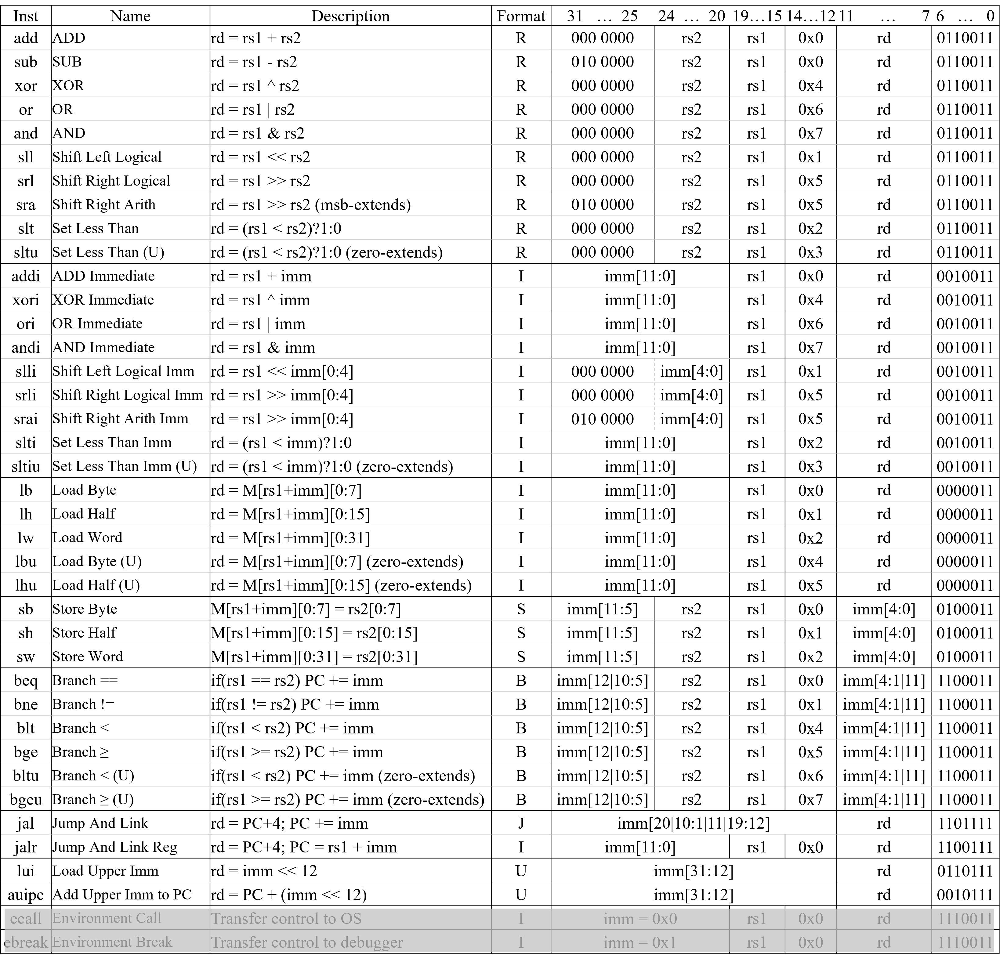
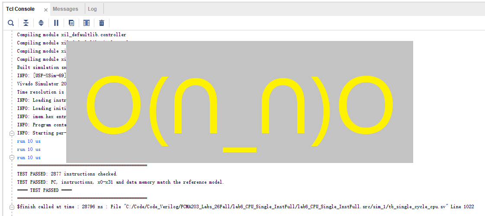

实验六 RV32I 全指令单周期 CPU 设计
在实验五中设计的单周期 CPU 的基础上，我们将在本实验中完善指令集，实现 RV32I 集中的大部分指令，并通过仿真验证。
1. 待实现的 RV32I 指令
待实现的 RV32I 指令如下图，最后两行的 ecall 和 ebreak 指令除外。

如果需要查看各指令的详细描述，请参考 RISC-V 指令集手册，手册在 git 仓库中已提供，这里再次提供下载链接：下载 The RISC-V Instruction Set Manual_20260120.pdf。文档比较长，可以用 Ctrl+F 搜索指令助记符，找到对应的指令描述。
一部分指令的实现方式与上次实验中的数据通路非常类似，例如 sll 、srl、sra 等指令的实现方式与 add、sub、and、or 指令类似，只是 ALUctrl 的值不同。
但以下几类指令的实现需要 新增 数据通路，必须理解指令功能，因此特别说明。
slt | sltu | slti | slitu 指令
slt 和 sltu 指令将寄存器 rs1 和 rs2 的值分别视为有符号和无符号数，并进行比较。如果 rs1 < rs2， rd = 1，否则 rd = 0。
slti 和 sltiu 指令将寄存器 rs1 的值和立即数 imm 的值分别视为有符号和无符号数，并进行比较。如果 rs1 < imm， rd = 1，否则 rd = 0。
前序实验的 ALU 设计中已经完成比较功能并输出了 lt 和 ltu 标志位。这两个标志位可以直接作为 slt、sltu、slti、sltiu 指令的判断依据。只需要在 ALU 模块中增加将 ALU 的输出值 set 为 1 或 0 的功能即可。
lb | lh | lw | lbu | lhu 指令
sb | sh | sw 指令
jal | jalr 指令
2. 实验内容
单周期 CPU 设计
课堂已详细讲解了单周期处理器设计各模块的功能，模块总框图如图。

ALU 和 register file 模块可使用实验四中你的设计。由于 7 条指令中没有移位指令，ALUctrl 的最高 2 bits 可以硬连为 0。
这里 直接给出 指令存储器 instruction memory 和数据存储器 data memory 的代码，下载 imem.v，下载 dmem.v，下载 sram.v。注意不要修改模块名和端口名。
必做内容1：单周期 CPU verilog 代码设计
参考总框图完成剩余模块及 Top 模块的代码设计。
Top 模块代码框架给出如下，请补充内部连线和模块例化。
注意：不要改变示例中给出的顶层名 cpu_top 以及 module 内部信号名，以防 testbench 中抓取信号时因找不到而报错。这些信号包括 input/output 信号名，pc、inst 等给出的内部连线，例化的寄存器堆实例的名字 u_regfile 和 数据存储器实例的名字 u_dmem。
1module cpu_top (
2 input wire clk,
3 input wire reset, // 异步复位信号，高电平有效
4 input wire [31:0] start_pc // 程序起始地址：复位后 PC 从该地址开始取指
5);
6
7 //--------------------------------------------------------------------------
8 // 给定的一部分内部连线
9 //--------------------------------------------------------------------------
10 wire [31:0] pc; // 当前 PC
11 wire [31:0] inst; // 当前指令
12
13 wire [31:0] read_data_1; // 寄存器堆读口 1
14 wire [31:0] read_data_2; // 寄存器堆读口 2
15
16 wire [31:0] imm; // 立即数
17
18 //--------------------------------------------------------------------------
19 // 请补充其他内部连线
20 // ......
21 //--------------------------------------------------------------------------
22
23
24 //--------------------------------------------------------------------------
25 // 给定的一部分模块例化名，请补充信号对应关系
26 //--------------------------------------------------------------------------
27 regfile u_regfile (
28 .clk ()
29 ,.rst ()
30 ,.write_addr ()
31 ,.write_data ()
32 ,.wen ()
33 ,.read_addr1 ()
34 ,.read_data1 ()
35 ,.read_en1 ()
36 ,.read_addr2 ()
37 ,.read_data2 ()
38 ,.read_en2 ()
39 );
40
41 dmem u_dmem (
42 .clk ()
43 ,.addr ()
44 ,.wdata ()
45 ,.write_en ()
46 ,.rdata ()
47 );
48
49 //--------------------------------------------------------------------------
50 // 请补充其他赋值语句模块及例化模块
51 // ......
52 //--------------------------------------------------------------------------
53
54endmodule
单周期 CPU 仿真
本次实验的 testbench 文件直接提供，tb_cpu_top_plan.sv (点击下载) 。
为了对 CPU 指令执行的正确性进行测试，testbench 中需要在测试前对指令寄存器 imem 和数据寄存器 dmem 进行初始化，这个过程由 testbench 文件中的系统函数 $readmemh 完成。这个函数将十六进制表示的机器码内容从文件中读入到 memory 中。为指令存储器 imem 和数据存储器 dmem 准备的初始化机器码文件提供如下，imem.hex (点击下载) 和 dmem.hex (点击下载)。请下载这两个 .hex 文件并以 simulation source 的途径添加到 project 中。
必做内容2：CPU testbench 仿真
完成 Top 模块的测试。
如果对比结果有误，软件会在 Tcl Console 一栏内给出提示信息。如下图所示，dut 为待测试设计，也就是你的 Top 模块。提示信息将给出 dut 和 golden standard 的对比值，包括：pc 的对比、指令的十六进制表示和助记符形式、操作数的对比、寄存器值的对比等信息。请根据提示信息检查你的设计，找出 bug 并修正。

请 de 出所有的 bug，并对所有测试用例都通过的界面进行截图，示例如下。


3. 报告提交
本次实验需要提交：
实验报告：
下载实验报告模板
.v文件压缩包：只需设计文件，无需仿真文件
两项一同扫码提交（支持从微信聊天记录上传）。
Deadline ：2026-11-15 23:59:59 。